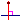

, crean la circunferencia de centro O que pasa por A.
, crean la circunferencia de centro O que pasa por A.Construcciones: Ejemplo 2.
Deseamos realizar una construcción que crea las dos tangentes a una circunferencia trazadas desde un punto exterior a esta circunferencia.
Comience por utilizar el menú Archivo - Nueva figura sin longitud unidad.
Con ayuda del ícono cree tres puntos libres que llamaremos O, A y M (en la práctica es inútil nominarlos).
Con ayuda del ícono , crean la circunferencia de centro O que pasa por A.
Nuestra construcción necesita de utilizar el centro de la circunferencia pero no debe utilizar el punto O. En efecto los objetos finales sólo deben construirse con la circunferencia y el punto M. No deben utilizar el punto O que sirvió para crear la circunferencia.
Utilice el ícono  para ocultar el punto O.
para ocultar el punto O.
Utilice el menú Crear - Punto - Centro de una circunferencia luego cliquean sobre el centro de la circunferencia.
Un nuevo punto aparece.
Utilice el menú  para crear el punto medio del segmento que une M con el centro de la circunferencia. Lo llama ahora la circunferencia de centro I y que pasa por O.
para crear el punto medio del segmento que une M con el centro de la circunferencia. Lo llama ahora la circunferencia de centro I y que pasa por O.
Utilice el ícono  para crear la intersección de las dos circunferencias. Dos puntos resultan que llamaremos P y Q.
para crear la intersección de las dos circunferencias. Dos puntos resultan que llamaremos P y Q.
Utilice el ícono para crear los segmentos [OP] y [OQ].
Utilice el ícono para crear los perpendiculares a estos dos segmentos que pasan respectivamente por P y Q. Son nuestras dos tangentes.
Utilice el menú Construcciones - Elección de los objetos fuentes - Gráficos.
Cliquear en primer lugar M luego sobre la primer circunferencia.
Utilice a continuación el menú Construcciones- Elección de los objetos fuentes - no gráficos.
Cliquear sobre las dos tangentes.
Queda por finalizar la construcción.
Utilice el menú Construcciones - Finalizar la construcción en curso.
Una caja de diálogo se abre. Complétela como abajo:

Las dos primeras líneas sirven para dar indicaciones sobre la utilidad de la construcción.
Los dos últimas sirven para dar indicaciones al usuario cuando esté designando los dos objetos fuentes.
Valide. Se crea la construcción. Si registran su figura la construcción se registrará con la figura.
Vamos ahora a registrar nuestra construcción.
Utilice para eso el menú Construcciones- Guardar una construcción de la figura en un archivo.
Una caja de diálogo se abre que les presenta las construcciones contenidas en la figura.
Cliquear sobre Tangente luego cliquear sobre Guardar.
Una caja de diálogo clásica de guardar se abre.
Elija el nombre del archivo (el nombre de la macro por defecto) y la ubicación de su elección luego validan.
Utilicemos ahora esta construcción en una nueva figura.
Cree una nueva figura.
Cree una circunferencia y un punto exterior a esta circunferencia.
Utilice el menú Construcciones - Implementar un construcción desde un archivo.
Una caja de diálogo se abre similar a la de la figura de abajo.
Si cliquean una construcción (Tangente.mgc por ejemplo) pueden ver abajo de la ventana de diálogo el nombre de la construcción y la información sobre ésta.
Cliquear sobre Abrir.
La línea de indicación les pide cliquear sobre el punto por el cual deben pasar las tangentes. Cliquear sobre el punto deseado.
La línea de indicación les pide a continuación cliquear sobre la circunferencia.
Las tangentes aparecen.
Observación importante: Cuando implementan una construcción contenida en un archivo o cuando guardan una construcción en un archivo, pueden decidir cuál es el directorio por defecto en el cual esta operación se hará. Esta elección se hace con el menú Opciones - Preferencias y cliqueando la pestaña Directorio construcciones.
Copyright © <2009>, <Yves Biton>
Created with the Freeware Edition of HelpNDoc: Free PDF documentation generator